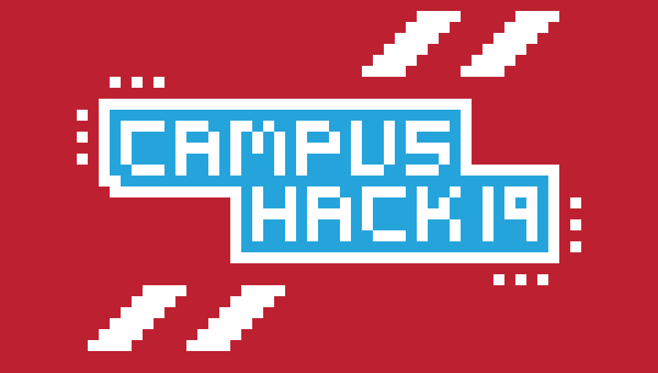

I am computer science student at the University of Southampton. My passion for computer science derives not simply from the pleasure of problem solving but also as an activity that allows me to express my creativity through building novel entities of code. I am the treasurer of the Electronics and Computer Science Society, the biggest society of the university. I am also interested in finance and investing. In my free time, I enjoy reading books on investing or about science. I also enjoy going to the gym or going out for a run with friends. And I love watches and cars.
About Me
Latest Projects
Open HoneyBadger Project
A flexible language good for scripting and for larger projects

The OHBP will (hopefully) become an easy to use and understand programming language built around scalability and performance. So with HoneyBadger, you should be able to whip it out to write a quick script or create a robust application with it. I want it to basically be a very accessible language that resembles more C and C++.

We Will Judge You - CampusHack19
We wanted to create an application that fetches a large amount of tweets around a trending topic and apply sentiment analysis methods on those tweets in order to infer the publics opinion around the subject. Our "sentiment analyser" was very primitive but it is an idea that I want to continue to develop when I have the time.
Work Experience
Software Engineer Intern - Raymarine (Summer 2019)
I have overhauled the diagnostics section of LightHouse 3 (Raymarine's proprietary OS) in order to give the end-user more information about the devices connected to the network and more functionality such as giving the ability to calibrate various types of sensors as well as renaming devices. I have also created a common back-end for the managing and storing of custom names which reduces redundancy of data as well as data inconsistencies. I also attended daily Scrum meetings during which I would report my progress to the Scrum master.
Spring Intern - J.P Morgan (8-12 Apr 2019)
During this week, I networked with junior and senior employees of the company as well as shadowed software engineers. I also took part in two competitions. The first competition was a Robocode hackathon in which we had to program a primitive artificial intelligence so that our tank could seek and destroy other tanks. My Team and I ranked 2nd in the battle of Bournemouth (10 teams) and in the top 5 in the battle of the UK (teams from Bournemouth, London and Glasgow). The second challenge, which my team and I won, was an algorithmics competition (bracket evaluation/ expression parsing, optimisation problems).
Polyvalent Employee - MacDonald's (Summer 2018)
I worked as a cook at one of the busiest MacDonald's in the whole of France (the restaurant was situated inside of a train station). I had to get to the restaurant by 6 am in order to setup and organise the kitchen as well as plan the amount of food that was going to be needed throughout the day. Once the kitchen was ready, I would start to get all of the food out of the cold storage and place it in the freezers situated next to the fryers and stoves so that other cooks would be able to quickly access the food when the midday rush comes around. I would then prepare the condiments, cut tomatoes and prepare the salad. All of these preparations had to be done before quarter to 7 so that I could start cooking breakfast by that time. I would then have a break at around 10 and would resume at around 10.30 as that's when the rush starts. It is called a rush because cooks usually end up running around preparing burgers because of the high demand.